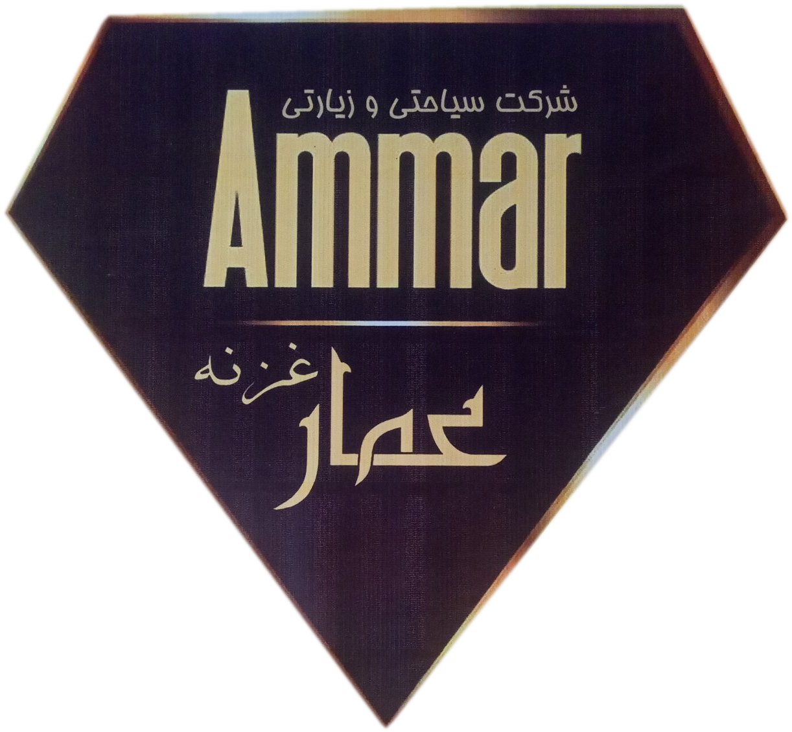

مشهد، شهرِ رضاست؛ این نقشه، راهنمای قدمهای تو در شهرِ امامِ مهربانی است. روی تصویر هر بقعه در نقشه بزنید تا کارتش باز شود؛ هر بار فقط یک کارت باز است.
برای دیدن جزئیات نقشه، آن را به چپ و راست بکشید یا با دو انگشت بزرگنمایی کنید. شمارههای روی نقشه با شمارههای کارتها یکی است.
موقعیت: مرکز شهر مشهد و کانون نقشه. نسبت به روضهٔ منوره: صحن انقلاب (عتیق) در شمال، صحن آزادی (نو) در شرق، صحن جمهوری اسلامی در غرب، صحن قدس در جنوب مسجد گوهرشاد، و صحن پیامبر اعظم (جامع رضوی) در جنوب مجموعه و بزرگترین صحن است.
شمارش صحنها: شمارش کنونی حرم ۹ صحن است: انقلاب اسلامی، آزادی، جمهوری اسلامی، قدس، جامع رضوی، غدیر، کوثر، هدایت و بعثت. عدد ۵ که در برخی منابع قدیمی آمده، مربوط به پیش از تکمیل توسعههاست (در مدخل قدیمی دائرةالمعارف بزرگ اسلامی سه صحن موجود و دو صحن در دست ساخت آمده است).
معماری: گنبد طلایی دوپوسته (حدود ۳۱ متر تا نوک بیرونی)، ایوانهای طلایی نادری و ناصری، و مسجد گوهرشاد در فضای حرم.
اعمال: زیارت حرم امام رضا (ع) با زیارتنامهٔ مأثور انجام میشود.
موقعیت: شمال مشهد (مایل به شمال غربی)، انتهای خیابان خواجه ربیع، در باغی وسیع کنار کشفرود، حاشیهٔ شمالی شهر.
معماری: بنای صفوی (۱۰۲۶ تا ۱۰۳۱ هـ.ق)؛ نمای بیرونی هشتضلعی، درون چهارایوانی، گنبد فیروزهای دوپوسته به ارتفاع ۱۸ متر، با کاشیکاری معرق.
اعمال: در منابع این پژوهش، عمل ویژهٔ مستندی برای این بقعه ذکر نشده است.
موقعیت: شرق/جنوب شرق مشهد، دامنهٔ رشتهکوه بینالود، سمت جنوب جادهٔ فریمان، روبهروی بهشت رضا، در شکاف کوه و کنار چشمه؛ حدود ۳ کیلومتر دورتر از خواجه اباصلت.
معماری: گنبد هرمی پنجضلعی با پوشش شیروانی، دو گلدستهٔ کمارتفاع، ایوان بزرگ شمالی به ارتفاع ۵ متر با آینهکاری و کاشی هفترنگ.
اعمال: در منابع این پژوهش، عمل ویژهٔ مستندی برای این بقعه ذکر نشده است.
موقعیت: جنوب شرق مشهد، جادهٔ مشهد–فریمان، نرسیده به بهشت رضا، روبهروی بهشت جوادالائمه؛ حدود ۳ کیلومتر دورتر از خواجه مراد. ترتیب قطعی شرقی/غربی این دو بقعه نسبت به هم در منابع ثبت نشده است و نقشه فقط «کنار هم در مسیر فریمان» را نشان میدهد.
معماری: بنای اصلی چهارضلعی با گنبد، دو رواق مستطیلی، کاشی هفترنگ و آینهکاری. هشتضلعیِ یادشده در برخی منابع، نمای ضریح است، نه بنای اصلی؛ پس «چهارضلعی» و «هشتضلعی» هر دو درستاند ولی برای دو جزء متفاوت بنا.
اعمال: در منابع این پژوهش، عمل ویژهٔ مستندی برای این بقعه ذکر نشده است.
موقعیت: شمال شرق مشهد، روستای میامی، جادهٔ مشهد–سرخس، دامنهٔ کوه؛ بقعه حدود ۱ کیلومتری روستای میامی است.
معماری: بقعهٔ هشتضلعی با گنبد فیروزهای بزرگ دوپوسته، شبستان ۱۴ ستونهٔ آینهکاری، کتیبهٔ سنگی سردر به سال ۹۳۷ هـ.ق، چشمهٔ شرقی.
نام: این بقعه به نام امامزاده یحیی میامی معروف است.
اعمال: در منابع این پژوهش، عمل ویژهٔ مستندی برای این بقعه ذکر نشده است.
موقعیت: غرب/جنوب غرب مشهد، روستای گلستان (حصار گلستان)، مسیر طرقبه. نام روستا در منابع دوگونه آمده است: «گلستان» و «حصار گلستان».
معماری: نمای آجری و کاشی، دو ضریح در یک رواق بزرگ، گلدستههای قدیمی که پس از توسعهٔ سال ۱۳۸۲ بهعنوان یادگار معماری قدیم حفظ شدهاند. در کتیبههای قدیمی نام برادر دوم «باصر/باسر» هم آمده و از حدود ۱۳۸۲ به «یاسر» تغییر یافته است.
اعمال: در منابع این پژوهش، عمل ویژهٔ مستندی برای این بقعه ذکر نشده است.